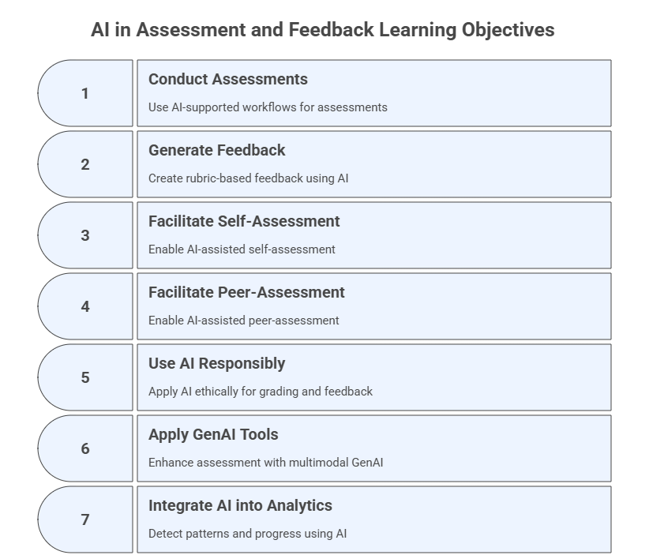

7. AI in Assessment and Feedback#
Measuring learning, guiding improvement, and supporting integrity
This step integrates previously designed assignments and rubrics with generative AI to enhance assessment strategies and feedback mechanisms. You will learn how to conduct assessments using existing assignment types with AI support, generate rubric-based constructive feedback, use AI-assisted self- and peer-assessment, and leverage AI for tasks like feedback generation, grading, and originality verification. The module also explores various AI tools and techniques for these tasks.
Learning Objectives#
After completing this module, participants will be able to:
Conduct assessments using AI-supported workflows grounded in existing assignment types.
Generate rubric-based, constructive feedback using structured AI prompting.
Facilitate AI-assisted self-assessment and peer-assessment.
Use AI responsibly for grading support, feedback generation, and originality verification.
Apply multimodal and research-driven GenAI tools to enhance assessment processes.
Integrate AI into formative analytics to detect patterns, misconceptions, and progress.
Update the AI Workspace and the Course Personalized Assistant to support ongoing assessment tasks.

7.1 Conduct Assessments Using Existing Assignment Types#
Purpose#
Use GenAI to support assessment workflows across quizzes, case studies, projects, presentations, and multimodal tasks, maintaining alignment with rubrics and learning outcomes.
Prompt Template — Instructional
For each of the following assignments describe how generative AI can support their administration and analysis.
Include one example AI-supported workflow for each assignment type.
[Attach or reference your assignments]
Sample Illustration#
Assignment Type |
AI-Supported Workflow |
Example Prompt |
|---|---|---|
Quiz |
Auto-generate variants, reasoning checks |
“Find misconceptions in these quiz answers.” |
Case Study |
Generate guiding questions, draft feedback |
“Analyze this case using rubric criteria.” |
Project |
Provide milestone feedback, structure mapping |
“List 5 risks or gaps in this project proposal.” |
Additional Recommended Tools#
NotebookLM or Claude Quiz Generator – grounded MCQs from course materials
AI Workspaces – persistent assignment evaluators
7.2 Generate Rubric-Based, Constructive Feedback#
Purpose#
Accelerate high-quality, criterion-based feedback while ensuring human oversight and student-centered language.
Prompt Template — Role-Based
You are an AI tutor grading a student’s [Assignment Type].
Using the rubric provided, give criterion-level feedback with:
- Score or level
- Strengths
- Specific improvements
[Attach rubric]
[Attach student work]
Sample Output Structure#
Criterion |
Score |
Feedback |
|---|---|---|
Pedagogical Soundness |
4/5 |
Clear rationale, but missing examples… |
AI Integration |
3/5 |
Good attempt; ensure transparency of tool use… |
Optional Enhancements#
Language-level variants: beginner / intermediate / advanced
Bias audit of the rubric: check for clarity, bias, ambiguity
Accessibility transformations: simplify language, add examples
7.3 Use AI-Assisted Self- and Peer-Assessment#
Purpose#
AI supports metacognition by generating checklists, guiding questions, and reflection prompts.
Prompt Template — Instructional + Role-Based (When the Rubric is Available)
You are an instructional assistant helping students reflect on their work.
Using the rubric provided below, generate:
1) A self-assessment checklist that students can use before submitting their work.
- Include 6–10 items.
- Each item should be phrased as a yes/no or short-answer prompt.
- Focus on clarity, completeness, use of AI (if applicable), and alignment with rubric criteria.
2) Three peer-review prompts that guide students in giving constructive feedback to a classmate.
- Each prompt should ask reviewers to:
a) identify strengths,
b) note one area for improvement,
c) give a specific suggestion based on the rubric.
Here is the rubric to use:
[Paste rubric here]
Additional Prompt Variant — Instructional + Role-Based (When the Rubric is NOT Available)
You are an instructional assistant helping students reflect on their work.
The instructor has not provided a rubric.
Using ONLY the assignment description below, perform the following:
1) Derive 3–5 key evaluation criteria implied by the assignment.
- Name each criterion.
- Briefly explain how it relates to the assignment requirements.
2) Create a self-assessment checklist (6–10 items) aligned with the criteria you identified.
3) Generate three peer-review prompts that guide reviewers to:
- describe what the student did well,
- identify one improvement,
- give one actionable suggestion.
Here is the assignment description:
[Paste assignment here]
7.4 Use AI for Feedback, Grading, and Academic Integrity#
Purpose#
Use AI as a supportive grader, not as a replacement, to increase consistency, quality, and turnaround time.
Identify Grading and Academic Integrity Tools#
Prompt Template — Zero-Shot
List and briefly explain 5-8 tools that can be used to:
- Auto-grade quiz responses
- Generate rubric-based feedback
- Detect AI-generated plagiarism (academic integrity)
Include benefits and limitations, and provide a table comparing them.
Sample Tools#
CoGrader (cograder.com)
Stargrader (stargrader.com)
EssayGrader (essaygrader.ai)
Gradescope (gradescope.com)
Turnitin Academic Integrity (turnitin.com/solutions/academic-integrity)
Auto-grade AI-generated Quiz Responses#
Prompt Template — Instructional + Role-Based
You are an expert educator, specifically an experienced grader for [Subject Name] at the [Grade Level].
Your task is to evaluate a student's answer to a quiz question.
Here is the quiz question:
[Quiz Question Text]
Here is the expected correct answer (or key concepts to be included):
[Expected Answer / Key Concepts / Rubric for scoring specific elements]
Here is the student's response:
[Student's Response Text]
Evaluate the student's response based on the following criteria and provide a score out of 5, along with a brief justification.
- **Accuracy:** How factually correct is the student's response?
- **Completeness:** Does the response cover all the essential points from the expected answer?
- **Clarity:** Is the response easy to understand and well-articulated?
Generate Rubric-Based Feedback for Student Case Studies#
Prompt Template — Instructional + Role-Based
You are an expert academic evaluator for [Subject Name], specializing in providing detailed, rubric-based feedback for student case study analyses.
Here is the case study prompt/assignment description:
[Case Study Prompt/Assignment Description Text]
Here is the student's case study submission:
[Student's Full Case Study Submission Text]
Here is the grading rubric:
[Detailed Rubric - Paste the full rubric here. Include criteria, performance levels (e.g., Excellent, Good, Developing, Beginning), and their descriptions.]
Your task is to:
1. **Evaluate the student's submission against each criterion in the rubric.**
2. **Assign a performance level/score for each criterion based on the rubric's descriptors.**
3. **Generate specific, actionable feedback for each criterion, explaining *why* the student received that score and providing concrete suggestions for improvement.**
4. **Provide an overall summary of strengths and areas for development.**
5. **Calculate the total score based on the rubric's point values.**
Provide your output in a structured format, similar to a feedback report:
## Feedback Report for Case Study Analysis
**Student Name:** [Leave Blank / Student ID if known]
**Assignment:** Case Study Analysis: [Case Study Title]
### Rubric Evaluation:
**Criterion 1: [Criterion Name from Rubric]**
* **Score/Level:** [e.g., 4/5 - "Good" / "Developing"]
* **Feedback:** [Specific feedback relating student's submission to this criterion's descriptors. Explain what they did well and where they could improve, using examples from their text if possible.]
**Criterion 2: [Criterion Name from Rubric]**
* **Score/Level:** [e.g., 3/5 - "Developing"]
* **Feedback:** [Specific feedback]
... (Repeat for all criteria) ...
### Overall Summary:
**Strengths:**
[Summarize overall strengths based on the feedback above.]
**Areas for Development:**
[Summarize overall areas for improvement based on the feedback above.]
**Total Score:** [Calculated Total Score] / [Maximum Possible Score]
Detect AI-generated Plagiarism in Teaching Project Submissions#
Note: Detecting AI-generated plagiarism with a general LLM is a trickier and less reliable task than dedicated tools like Turnitin (turnitin.com/solutions/academic-integrity) or GPTZero (gptzero.me). While an LLM can analyze text for patterns, it lacks the specific training and sophisticated algorithms of specialized detectors. It is best used as a signal for human review, not as a definitive judgment.
Prompt Template — Role-based
You are an expert text analyst specializing in identifying characteristics of human-written versus AI-generated content.
You understand that AI-generated text often exhibits patterns like:
- High predictability (low perplexity)
- Uniform sentence structure and vocabulary
- Lack of distinct personal voice or anecdotes
- Repetitive phrasing or transition words (e.g., "deep dive", "furthermore," "in conclusion," "however")
- Grammatically perfect but bland language
- Potential factual inaccuracies or "hallucinations" if the AI wasn't grounded in specific sources.
Here is a student's project submission:
[Student's Project Submission Text]
Analyze the text and provide an assessment of whether it exhibits characteristics commonly associated with AI-generated content. Do NOT make a definitive judgment, but highlight specific elements that *suggest* it might be AI-generated, or that it appears to be human-written.
Focus your analysis on:
1. **Perplexity and Burstiness:** Does the text feel highly predictable, or does it have natural variations in sentence length and complexity?
2. **Voice and Personality:** Is there a distinct student voice, personal reflection, or anecdotal evidence?
3. **Vocabulary and Structure:** Is the language overly formal or repetitive? Are sentence structures varied?
4. **Content Nuance:** Does the content demonstrate deep understanding, critical thinking, and original insights, or does it feel generic and surface-level?
Provide your analysis in a clear, bulleted list, followed by an overall assessment.
**Example of Analysis Format:**
- **Perplexity/Burstiness:** [Comment on predictability/variation]
- **Voice/Personality:** [Comment on presence/absence of unique voice]
- **Vocabulary/Structure:** [Comment on word choice and sentence construction]
- **Content Nuance:** [Comment on depth of understanding and originality]
**Overall Assessment:** [Summarize likelihood of AI generation based on observations, e.g., "The text exhibits several characteristics consistent with AI generation, such as...", or "The text appears to be human-written, showing a distinct voice and varied sentence structures."]
Note: To make these gradings more streamlined in standard LLMs, it is possible to create a specific AI Workspace only for grading, as they are designed for more structured, long-term, or collaborative work with the AI.
Use a Single Prompt to Perform Multiple Gradings (Essay, Case Study, and Project)#
Prompt Template — Instructional + Role-Based
# Prompt to Grade Essays
You are an educational assistant tasked with grading essays.
Perform the following tasks for a course on [Course Topic], using student submissions.
The tasks are: auto-grading quiz responses, generating rubric-based feedback for student case studies, and detecting AI-generated plagiarism in teaching project submissions.
Follow the instructions for each task, ensuring consistency, accuracy, and actionable feedback.
## Task 1: Auto-Grade Quiz Responses
**Objective**: Grade quiz responses, including those potentially generated by AI, using a provided rubric.
**Inputs**:
- Quiz Question: [Input Questions]
- Sample Responses: [Input Responses]
- Rubric:
- Content Accuracy (50%): Correctness of concepts.
- Clarity (30%): Logical flow and readability.
- Completeness (20%): Addresses all parts of the question.
**Instructions**:
1. Evaluate each response against the rubric.
2. Assign a score (0-100) with a breakdown.
3. Provide 1-2 sentences of feedback with improvement suggestions.
4. Return results in a table format:
| Response | Content Accuracy (50) | Clarity (30) | Completeness (20) | Total Score (100) | Feedback |
## Task 2: Generate Rubric-Based Feedback for Student Case Studies
**Objective**: Provide detailed feedback on a case study submission using a rubric.
**Inputs**:
- Case Study Submission: [Input Submission]
- Rubric:
- Relevance (40%):
- Depth of Analysis (30%):
- Presentation (20%):
- Innovation (10%):
**Instructions**:
1. Assess the submission against each rubric criterion, assigning scores out of 100 for each (e.g., Relevance: 60/100).
2. Calculate a total score as a weighted average.
3. Provide 2-3 sentences of feedback, including strengths, weaknesses, and suggestions.
4. Format the output as a table with scores and feedback:
| Criterion | Score (out of 100) | Feedback |
| Total Score | [Calculated] |
## Task 3: Detect AI-Generated Plagiarism in Teaching Project Submissions
**Objective**: Identify potential AI-generated content in project submissions.
**Inputs**:
- Project Submission: [Input Submission]
- Detection Criteria: Look for signs of AI generation (e.g., overly polished phrasing, generic language, lack of personal voice, uniform structure).
**Instructions**:
1. Analyze the submission for signs of AI generation.
2. Assign a confidence score (0-100%) indicating the likelihood of AI generation.
3. Provide 1-2 sentences explaining your assessment and suggest next steps if plagiarism is suspected.
4. Return results in a table format:
| Submission | Confidence Score (AI-Generated) | Assessment and Next Steps |
## Additional Notes
- Use course context where applicable.
- Ensure feedback is constructive and aligned with educational goals (e.g., improving student understanding of the topic).
- For Task 3, if the confidence score is high (>70%), recommend actions like requesting a revision or draft history by a specific date.
- Identify performance trends and misconceptions across students.
- Summarize this data to prepare a follow-up review session.
Multimodal Assessment#
AI can help evaluate:
video presentations
diagrams or concept maps
podcasts or audio submissions
multimodal learning artifacts
Prompt Template — Instructional
Analyze this student [Assignment Delivered] using the rubric below.
Identify strengths (content, delivery, accuracy) and actionable improvements.
Using Specific Tools#
Tool 1: Cograder.com or EssayGrader.ai (Essay Grading)#
Cograder.com and EssayGrader.ai are AI tools designed to grade essays and help teachers to provide quality feedback in less time.
To learn how Cograder or EssaGrader work try them by selecting the Fill in with sample in CoGrader (or copying this sample into EssayGrader) and analyze the output. If you have the case study delivered by a student, import or create the rubric into one of the tools to assess the assignment.
Tool 2: SciSpace#
Using function AI Detector input the text or upload the PDF file with the content to be checked for originality.
7.5 Updates to Your AI Workspace and Personalized Assistant#
Similarly to Module 6, this module does not require major structural updates to either the Workspace or the Personalized Assistant. Only minimal updates are recommended to integrate the new assessment-related materials created in Module 7.
Component |
Update Needed? |
Actions |
|---|---|---|
Workspace |
Minimal |
Upload new Module 7 materials only |
Workspace Instructions |
No |
No structural or behavioral updates |
PA Knowledge Base |
Minimal |
Upload student‑safe versions only |
PA Instructions |
No |
No changes needed to role, behavior, or boundaries |
Module 7 primarily adds content rather than new capabilities. The existing Workspace and PA structures already support assessment workflows effectively.
Note: Do not upload instructor versions of rubrics, detailed feedback templates, grading keys, or analytic summaries to the PA.
7.6 Exercises#
Exercise 1 — Create Three Assessment Variants#
Use the Workspace to generate:
one formative quiz
one case study
one multimodal project task
Exercise 2 — Rubric-Based Feedback Generation#
Upload a student submission; use a rubric-based feedback prompt; compare versions.
Exercise 3 — Self- and Peer-Assessment Workflow#
Generate checklists and peer prompts using your course rubric.
Exercise 4 — Originality & Consistency Screening#
Upload anonymized samples and run the reasoning-consistency analysis prompts.
Exercise 5 — Classwide Insights#
Upload a batch of student answers and generate a misconception matrix and reteaching plan.
7.7 Reflection#
How did AI enhance clarity, efficiency, or depth in your assessment processes?
Which feedback or grading tasks still require full human oversight?
How will you integrate AI-supported rubric workflows in future assignments?
How can responsible AI use strengthen fairness, transparency, and student growth?